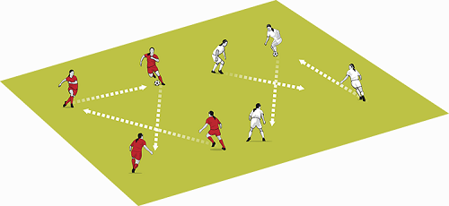

Five minute warm up
Get to the opposite group - go when your number is called.
This is a great warm-up to get the players ready for passing and receiving in a match.
How to do it
Arrange your players into two groups.
Let the two groups number themselves 1 to 4.
Tell the players to continually pass the ball and move in their areas.
Call out a number and that player must sprint across to the opposite area to join that team and continue to pass and move.
OR call out a number and that player must dribble the ball across to the opposite area.
Technique
Vital that there is good passing and receiving with good first touch and accuracy on the pass

1. Play a 4v1 in the squares – the target is 5 passes without the lone defender touching the ball
2. When the target number of passes have been reached the 4 players in the other squares join up in one square and a new defender comes from the central zone